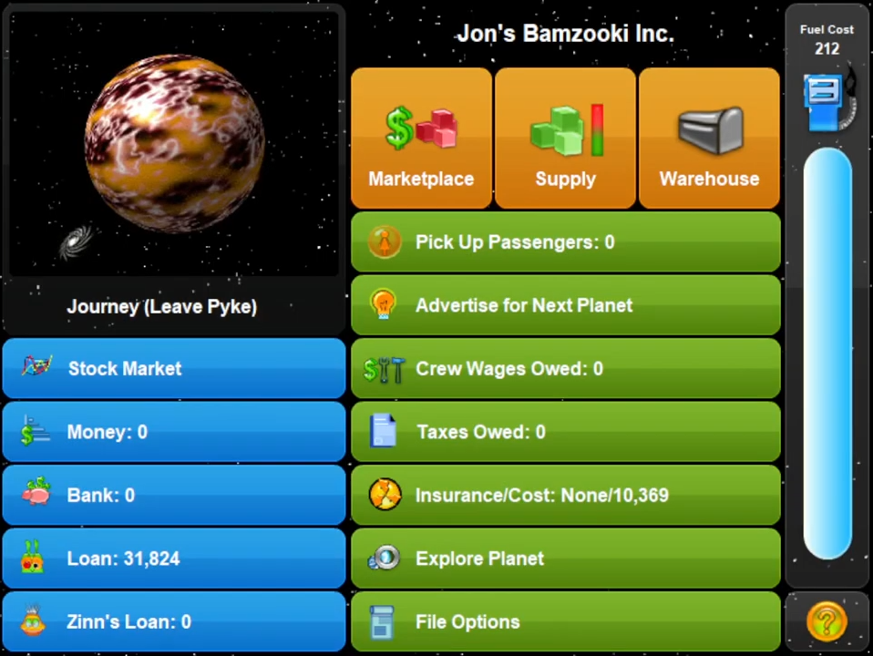

What is Gazillionaire?

Gazillionaire is a trading and strategy game released in 1994.
Players compete to earn as much money as possible by shipping goods and transporting passengers across the galaxy.
Over the course of the game they have to contend with random events, auctions for upgrades and monopoly style property all while competing against the 6 included AI companies.
Players compete to earn as much money as possible by shipping goods and transporting passengers across the galaxy.
Over the course of the game they have to contend with random events, auctions for upgrades and monopoly style property all while competing against the 6 included AI companies.
Why do this?
I randomly came across the game one day and it instantly piqued my interest.
It has a design style that I can only describe as unhinged and extremely 90s. All the characters are designed to look freakish and were created in what I would think is MS Paint if Gazillionaire didn’t predate it.
The ships and environments are all highly colourful, in a similar mad style to the sprites, but created in an early 3D program.
All of this reminds me of the looks of the “Zooks” from the show “Bamzooki” which gave me fond memories of when I was a child.
It has a design style that I can only describe as unhinged and extremely 90s. All the characters are designed to look freakish and were created in what I would think is MS Paint if Gazillionaire didn’t predate it.
The ships and environments are all highly colourful, in a similar mad style to the sprites, but created in an early 3D program.
All of this reminds me of the looks of the “Zooks” from the show “Bamzooki” which gave me fond memories of when I was a child.


The game is quite simple mechanically, mainly buy low and transport to the planet that allows you to sell the high, but it has enough interaction with fun random events to keep it entertaining.
I thought it would be fun to play online with friends, however without everyone owning a copy and sending the save file back and forth, this wasn’t possible in the original game.
I thought it would be fun to play online with friends, however without everyone owning a copy and sending the save file back and forth, this wasn’t possible in the original game.
While thinking about how the game could be controlled over the internet I realised since the game is turn based it could easily be controlled through some form of command line.
This would also enable it to be used in a “Twitch Plays” setting.
This would also enable it to be used in a “Twitch Plays” setting.
Implementation
Overall Structure
The program is set up to control the game through a set of commands, allowing for it to be controlled in a variety of ways.
Each menu in the game has an associated menu class that controls its functions.
These menu classes are in turn controlled by a player class, which is the layer that either interacts with the user or controls the game in some other way.
Finally, the main thread’s job is to work out whose turn it is (The turn order is not consistent) and activate the associated Player object.
Each menu in the game has an associated menu class that controls its functions.
These menu classes are in turn controlled by a player class, which is the layer that either interacts with the user or controls the game in some other way.
Finally, the main thread’s job is to work out whose turn it is (The turn order is not consistent) and activate the associated Player object.


Nothing :(
Menu Class
Each menu class is responsible for translating incoming commands into actions in game.
The intention for this was to use a module like pywinauto to directly control the buttons in game, however none of the inspection tools could find anything other than the windows menu bar.
Instead, buttons are pressed by taking control of the mouse, either clicking on a known coordinate or in the case of objects that can move around the screen, by detecting an image.
The library used to do this works by simply scanning for a set of pixels, which does mean the game window is restricted to a specific size when using this program.
The intention for this was to use a module like pywinauto to directly control the buttons in game, however none of the inspection tools could find anything other than the windows menu bar.
Instead, buttons are pressed by taking control of the mouse, either clicking on a known coordinate or in the case of objects that can move around the screen, by detecting an image.
The library used to do this works by simply scanning for a set of pixels, which does mean the game window is restricted to a specific size when using this program.
Player Class
The player class is what issues commands to the menu objects.
This class has to deal with 3 distinct phases of the game.
The first phase is clicking through each notification that appears at the start of a turn.
None of these menus have any decisions to make, so this can be automated.
Stage two is the main game loop. The player stores the current menu and sends a command to it.
The function either returns the next menu or None.
In the case it's another menu that's saved as the current menu, but if it's None the planet has been left and the main loop ends.
Finally is the end of turn phase, this is the most complicated of the three for the player class to handle...
This class has to deal with 3 distinct phases of the game.
The first phase is clicking through each notification that appears at the start of a turn.
None of these menus have any decisions to make, so this can be automated.
Stage two is the main game loop. The player stores the current menu and sends a command to it.
The function either returns the next menu or None.
In the case it's another menu that's saved as the current menu, but if it's None the planet has been left and the main loop ends.
Finally is the end of turn phase, this is the most complicated of the three for the player class to handle...

End of Turn
When leaving a planet, first a brief flying animation plays and then after that the game may or may not trigger an auction.
Auctions prompt the user to enter an amount of money and when everyone's turn ends the highest bidder walks away with either a facility (Think monopoly property but significantly weaker) or ship upgrade.
After that a series of 0 or more random events are triggered.
These come in two forms, the first of which is simply a paragraph of text explaining what has happened followed by an "ok" prompt to acknowledge and move on.
The second is similar, but asks a yes / no response.
Once all of those are over the next player's turn begins with specific start turn screen.
Each player controller class has to have a way of dealing with all of these events.
Auctions prompt the user to enter an amount of money and when everyone's turn ends the highest bidder walks away with either a facility (Think monopoly property but significantly weaker) or ship upgrade.
After that a series of 0 or more random events are triggered.
These come in two forms, the first of which is simply a paragraph of text explaining what has happened followed by an "ok" prompt to acknowledge and move on.
The second is similar, but asks a yes / no response.
Once all of those are over the next player's turn begins with specific start turn screen.
Each player controller class has to have a way of dealing with all of these events.